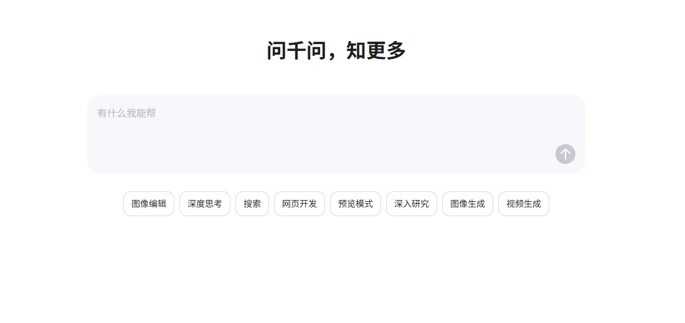

阿里通义千问阿里巴巴 · 阿里云
“云 + 开源 + 应用”三线并进：Qwen3.8 系列开放 2.4 万亿参数旗舰，千问 App 月活一年增长约 50 倍；阿里云 AI 收入连续 11 个季度三位数增长，自研芯片累计出货 47 万片。
一页结论
- 开放权重最激进：Qwen3.8 系列开放 2.4 万亿参数旗舰、27B 与 Flash-Next 等多个尺寸，27B 版本 Hugging Face 下载超 460 万次S2
- C 端增长最快：千问 App 9 月月活 1.58 亿，同比增长约 50 倍，位列国内第二S3
- 云业务变现：2026 年 1～3 月阿里云收入 416.3 亿元、同比 +38%，AI 相关产品收入 89.7 亿元，占外部收入首次超过 30%；百炼平台客户数同比增长 8 倍S4
- 全栈自研：平头哥真武芯片截至 2 月累计出货 47 万片，支持 400 多家企业客户S4
- 长期目标：CEO 吴泳铭提出未来五年云与 AI 商业化年收入突破 1,000 亿美元S5
01公司介绍
02公司战略
阿里的打法是“用开源模型做大生态，用云收钱，用千问 App 拿用户”。
- 开源全尺寸：从小模型到 2.4 万亿参数旗舰都开放权重，覆盖文本、图像、驾驶等多种模型S2
- 云是变现主渠道：AI 收入连续 11 个季度三位数增长S4
- 全栈自研：芯片、云、模型、应用一体S4
- C 端重投入：千问 App 快速拉新，月活跃居国内第二S3
- 办公 Agent：千问办公参与国内办公 Agent 竞争（媒体报道）S7
03模型矩阵与定位
| 模型 | 定位 | 输入 | 输出 | 上下文 |
|---|---|---|---|---|
| qwen3.8-max | 旗舰（思考与非思考模式） | $2 | $6 | 100 万S1 |
| qwen3.7-plus | 主力 | $0.4（限时 8 折） | $1.6（限时 8 折） | ≤25.6 万档；更长按阶梯计价S1 |
| qwen3.8-flash | 经济 | $0.15 | $0.47 | 100 万S1 |
价格单位：美元 / 百万 token，国际站标准价。批量调用 5 折。来源：S1

04产品与 Agent 布局
应用层
千问 App（深度思考、搜索、网页开发、深入研究、图像与视频生成）Qwen Code 编程工具千问办公（媒体报道）
开发者平台
阿里云 Model Studio（百炼）兼容 OpenAI 格式的 Qwen API
模型层
Qwen3.8-Max / Plus / FlashQwen3.8-2.4T-A95B 等开放权重Qwen-Image 2.1Qwen-Drive 驾驶模型
算力层
阿里云数据中心平头哥真武芯片
渠道阿里云千问 App淘宝、钉钉等阿里生态Hugging Face
05开放权重
| 模型 | 发布 | Hugging Face 下载 |
|---|---|---|
| Qwen3.8-2.4T-A95B | 2026-08-08 | 约 2.6 万 |
| Qwen3.8-27B（FP8） | 2026-08-13 | 约 464 万 |
| Qwen3.8-Flash-Next | 2026-08-24 | 约 403 万 |
| Qwen-Image-2.1 | 2026-09-14 | 约 22 万 |
下载量为调研日 Hugging Face 显示数据S2。
06商业模式
07上下游与渠道
上游：芯片与算力
平头哥真武芯片（47 万片）阿里云数据中心，未来一年在 8 个国家和地区新增数据中心S4
阿里通义
Qwen 模型、千问 App、Qwen Code
渠道
生态伙伴
基于 Qwen 开放模型二次开发的大量企业与开发者
下游客户
1.58 亿千问 App 月活用户S3阿里云企业客户
08用户与收入
| 指标 | 数据 | 口径 |
|---|---|---|
| 千问 App 月活 | 1.58 亿，同比约 +5077% | QuestMobile，2026-09S3 |
| 千问 C 端应用月活 | 超过 3 亿 | 阿里财报口径（含多端），2026 年 2 月S5 |
| 阿里云收入 | 416.3 亿元，同比 +38% | 2026 年 1～3 月S4 |
| AI 相关产品收入 | 89.7 亿元 | 同上S4 |
第三方 App 月活与公司口径（多端合计）不同。
09开发者口碑
10安全合规
| 项目 | 内容 |
|---|---|
| 部署地域 | Model Studio 提供新加坡、北京、香港、法兰克福、弗吉尼亚、东京等部署地域S1 |
| 可信基础设施 | 与中国互联网络信息中心推出智能体可信基础设施平台（媒体报道） |
11近期动态
12潜在风险分析意见
| 风险 | 表现 | 可能程度 |
|---|---|---|
| C 端投入回报 | 千问 App 高速拉新的成本与留存（分析意见） | 中 |
| 价格战 | 国内模型价格持续下探，压缩 API 利润（分析意见） | 中 |
| 芯片供应 | 高端 GPU 出口管制，依赖自研芯片 | 中 |
| 海外合规 | 部分海外客户对中国模型的合规顾虑（分析意见） | 中 |
“可能程度”为基于现有公开信息的判断，不是量化预测。
13综合结论分析意见
优势
- 芯片到应用的全栈
- 最全的开放权重矩阵
- 阿里云的企业客户基础
劣势
- C 端起步晚于豆包
- 海外品牌认知有限
机会
- 云与 AI 千亿美元目标
- 开放模型带来的全球开发者
威胁
- 豆包等国内对手
- 价格战
对 AI 产品团队的启示
- 开源是获客，云是收费：开放模型吸引开发者，最终在阿里云上产生用量与收入。
- 全尺寸覆盖让企业愿意选型：从端侧小模型到超大旗舰，企业可以按场景选。
- 自研芯片是长期成本护城河：在算力受限的环境下尤为关键。
- C 端可以后发追赶：千问 App 一年增长 50 倍，说明强入口与持续投入能改变格局。
信息缺口
以下信息未找到可靠的公开来源，本报告不做推测。
- 阿里 2026 年 7～9 月季度财报（预计 11 月中旬披露）
- Qwen3.8-Plus 的价格（官网当前仍以 qwen3.7-plus 为主力）
- 千问办公的产品细节与用户数
- 各开放模型的许可条款
来源
A 官方 · B 权威媒体或第三方 · C 社区（仅用于口碑与线索）。访问日期均为 2026-11-02。
- S1 · AModel inference pricing阿里云 Model Studio · 2026-10-29 更新
- S2 · AQwen on Hugging FaceHugging Face
- S3 · BQuestMobile 2026 年 9 月 AI 原生 App 月活 TOP10腾讯新闻（快科技） · 2026-10-20
- S4 · B阿里云 Q1 收入 416.26 亿，AI 收入占比首破 30%C114 通信网 · 2026-05-13
- S5 · B阿里巴巴财报报道（千问月活、五年目标）澎湃新闻 · 2026
- S6 · AQwen 官网阿里巴巴
- S7 · BByteDance Launches Doubao Work as China's Tech Giants Pivot to Office AI第一财经 Yicai Global · 2026-08
- S8 · CQwen3.8-Max: A New Bar for Coding and CoworkHacker News · 2026-08-03